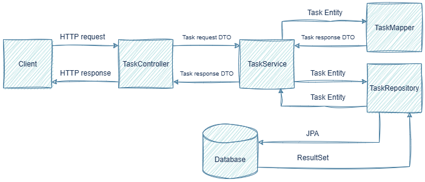

⚙️ Архитектура приложения
Обзор архитектуры
Приложение построено по принципу слоистой архитектуры, которая обеспечивает разделение ответственности между компонентами. Это классический подход для веб-приложений, следующий принципам SOLID и DDD.
Ниже представлена диаграмма взаимодействия слоёв:

Клиент отправляет HTTP-запрос, который первым делом попадает в контроллер. Здесь данные запроса оборачиваются в специальный объект для передачи данных - TaskRequest, который обеспечивает безопасность, проверяя и фильтруя входящую информацию.
Далее TaskRequest передаётся в сервисный слой (реализация TaskServiceImpl), где TaskMapper преобразует его в сущность Task. Затем подготовленная сущность сохраняется через TaskRepository, который в зависимости от операции либо сохраняет сущность в базе данных без возврата результата, либо возвращает сущность с данными.
При возвращении данных, сущность из репозитория передаётся в сервис, где маппер преобразует её в DTO - TaskResponse, а контроллер, затем, формирует из DTO финальный HTTP-ответ.
Описание и структура слоев
1. Слой представления
1. Контроллер
Пакет: com.example.taskmanager.controller
Основная задача: обработка HTTP-запросов и возврат HTTP-ответов.
Компоненты:
TaskController - компонент, который обеспечивает обработку HTTP-запросов для управления задачами. Контроллер содержит 5 основных методов, каждый из которых имеет свой тип, конечную точку и определенную задачу.
Методы контроллера:
| Название метода | Тип | Конечная точка | Описание |
|---|---|---|---|
| getTask | GET | /api/tasks/{id} |
Получение задачи по ID |
| getTasks | GET | /api/tasks |
Получение всех задач |
| createTask | POST | /api/tasks |
Создать задачу |
| updateTask | PUT | /api/tasks/{id} |
Обновить задачу по ID |
| deleteTask | DELETE | /api/tasks/{id} |
Удалить задачу по ID |
Основные функции контролера:
- Обработка HTTP-запросов (GET, POST, PUT, DELETE)
- Валидация поступающих на вход данных
- Вызов методов сервисного слоя
- Возврат HTTP-ответов
- Описание методов API посредством аннотаций Swagger (
@Tag,@Operation,@ApiResponses,@ApiResponse,@Parameter)
Наилучшие подходы проектирования:
- Отделение API от сущностей БД посредством DTO
TaskRequestиTaskResponse - Применение аннотаций валидации (
@Valid) - Использование конкретных маппингов для каждого метода (
@GetMapping,@PostMapping,@PutMapping,@DeleteMapping) вместо@RequestMapping - Централизованная обработка ошибок через
@RestControllerAdvice
Пример кода:
@RestController
@RequestMapping("/api/tasks")
public class TaskController {
private final TaskService taskService;
public TaskController(TaskService taskService) {
this.taskService = taskService;
}
@GetMapping("/{id}")
public ResponseEntity<TaskResponse> getTask(@PathVariable Long id) {
return ResponseEntity.ok(taskService.getTask(id));
}
}
2. DTO
Пакет: com.example.taskmanager.dto
Основная задача: изоляция API от внутренней структуры данных.
Компоненты:
- TaskRequest - DTO для входящих данных
- TaskResponse - DTO для исходящих данных
- ApiError - класс, определяющий единый формат ответа об ошибках
Классы TaskRequest и TaskResponse - это специализированные классы для передачи данных, которые обеспечивают
безопасность при передаче между разными слоями приложения. TaskRequest скрывает входящие данные от клиента, а
TaskResponse определяет какие именно данные вернутся клиенту.
Структура TaskRequest:
| Поле | Тип | Описание |
|---|---|---|
| title | String | Название задачи |
| description | String | Описание задачи |
| status | TaskStatus | Статус задачи |
Пример кода TaskRequest:
@Schema(description = "Request for creating or updating a task")
public record TaskRequest(
@Schema(description = "Task title", example = "Write a client for an external weather API")
@NotBlank(message = "Title is required")
@Size(min = 1, max = 100, message = "Title must be between 1 and 100 characters")
String title,
@Schema(description = "Task description", example = "Create a WeatherService that makes a request to a Public API by the name of a city and returns the current temperature")
@Size(max = 500, message = "Description cannot exceed 500 characters")
String description,
@Schema(description = "Task status", example = "IN_PROGRESS")
@NotNull(message = "Status is required")
TaskStatus status
) {}
Структура TaskResponse:
| Поле | Тип | Описание |
|---|---|---|
| id | Long | Идентификатор задачи |
| title | String | Название задачи |
| description | String | Описание задачи |
| status | TaskStatus | Статус задачи |
| createdAt | LocalDateTime | Время создания задачи |
Пример кода TaskResponse:
@Schema(description = "Task response data")
public record TaskResponse(
@Schema(description = "Task ID", example = "1")
Long id,
@Schema(description = "Task title", example = "Write a client for an external weather API")
String title,
@Schema(description = "Task description", example = "Create a WeatherService that makes a request to a Public API by the name of a city and returns the current temperature")
String description,
@Schema(description = "Task status", example = "IN_PROGRESS")
TaskStatus status,
@Schema(description = "Creation timestamp")
LocalDateTime createdAt
) {}
В классах TaskRequest и TaskResponse к каждому полю применены аннотации (@Shema) для их описания в Swagger, а также
в TaskRequest использует аннотации для проверки данных (@NotBlank, @Size, @NotNull).
ApiError
Класс ApiError - это POJO-класс, который также является DTO для передачи
информации об ошибках в едином формате.
Структура ApiError:
| Поле | Тип | Описание |
|---|---|---|
| timestamp | LocalDateTime | Время возникновения ошибки |
| status | int | Код состояния HTTP |
| error | String | Описание статуса |
| message | String | Подробное сообщение об ошибке |
| path | String | Маршрут, по которому произошла ошибка |
| validationErrors | List |
Список, отражающий различные нарушения валидации |
Пример кода ApiError:
public class ApiError {
private LocalDateTime timestamp;
private int status;
private String error;
private String message;
private String path;
@JsonInclude(JsonInclude.Include.NON_NULL)
private List<ValidationError> validationErrors;
public ApiError() {
}
...
ApiError также применена аннотация @JsonInclude(JsonInclude.Include.NON_NULL) на поле validationErrors,
которая в случае отсутствия ошибок валидации исключает это поле из ответа в возвращаемом JSON.
Подробнее о DTO изложено в разделе DTO-паттерн.
2. Слой бизнес-логики
Service
Пакет: com.example.taskmanager.service
Основная задача: реализация бизнес-логики приложения.
Компоненты:
- TaskService - интерфейс, описывающий основной набор методов, предназначенных для управления задачами.
- TaskServiceImpl - класс, содержащий реализацию методов, описанных в TaskService.
Основные функции TaskServiceImpl:
- Преобразование из Entity в DTO / из DTO в Entity при помощи TaskMapper
- Управление транзакциями (аннотация
@Transactional) - Генерация исключений
Наилучшие подходы проектирования:
- Применение полиморфизма через разделение классов на интерфейсы и их реализации.
- Соблюдение принципа SRP - класс
TaskServiceImplотвечает только за реализацию бизнес-логики, а каждый метод класса выполняет только одну задачу. - Соблюдение принципа DIP - обеспечивает зависимость
сервиса от интерфейсов (
TaskRepository,TaskMapper), а не их реализаций. Внедрение зависимостей происходит через конструктор, а не поля. - Изоляция бизнес-логики от деталей HTTP и базы данных
Пример кода TaskServiceImpl:
@Service
public class TaskServiceImpl implements TaskService {
private final TaskRepository taskRepository;
private final TaskMapper taskMapper;
public TaskServiceImpl(TaskRepository taskRepository, TaskMapper taskMapper) {
this.taskRepository = taskRepository;
this.taskMapper = taskMapper;
}
@Transactional
@Override
public TaskResponse updateTask(Long id, TaskRequest taskRequest) {
try {
Task task = taskRepository.findById(id).orElseThrow(() -> new ResourceNotFoundException("Task not found with id: " + id));
taskMapper.updateEntityFromDto(taskRequest, task);
Task updatedTask = taskRepository.save(task);
return taskMapper.entityToDTO(updatedTask);
} catch (DataAccessException e) {
throw new InternalServerException("Failed to update task due to database error", e);
}
}
}
Примечание
Аннотация @Transactional обеспечивает атомарность выполнения операций с базой данных. Она гарантирует, что все операции будут либо выполнены полностью, либо произойдёт откат операций при возникновении ошибки.
3. Слой доступа к данным
1. Модели/Сущности
Пакет: com.example.taskmanager.model
Основная задача: представление сущностей и их связывание с базой данных.
Компоненты:
Task - это JPA-сущность, в которой описана модель задачи. Она также ассоциирована с таблицей tasks в базе данных.
Используемые аннотации:
| Название | Назначение |
|---|---|
| @Entity | Помечает класс как JPA-сущность для сохранения в БД |
| @Table | Указывает имя таблицы в БД |
| @Id | Используется для обозначения поля в качестве первичного ключа |
| @GeneratedValue | Автоинкремент id с выбором разных стратегий |
| @Column | Сопоставление различных атрибутов и ограничений поля со столбцом таблицы в БД |
| @Enumerated | Сопоставления поля типа Enum со столбцом таблицы в БД |
| @PrePersist | Указывается над методом, который будет вызван перед сохранением новой записи |
Структура Task:
| Поле | Тип | Описание |
|---|---|---|
| id | Long | Идентификатор задачи |
| title | String | Название задачи |
| description | String | Описание задачи |
| status | TaskStatus | Статус задачи |
| createdAt | LocalDateTime | Время создания задачи |
Пример кода Task:
@Entity
@Table(name = "tasks")
public class Task {
@Id
@GeneratedValue(strategy = GenerationType.IDENTITY)
private Long id;
@Column(nullable = false, length = 100)
private String title;
@Enumerated(EnumType.STRING)
@Column(nullable = false)
private TaskStatus status;
@PrePersist
protected void onCreate() {
createdAt = LocalDateTime.now();
}
}
TaskStatus - это enum, который определяет набор возможных статусов задачи.
Структура TaskStatus:
| Статус | Описание |
|---|---|
| TODO | Задача создана, но не начата |
| IN_PROGRESS | Задача в работе |
| DONE | Задача выполнена |
Пример кода TaskStatus:
public enum TaskStatus {
TODO,
IN_PROGRESS,
DONE
}
2. Репозиторий
Пакет: com.example.taskmanager.repository
Основная задача: абстракция, промежуточный слой для доступа к данным.
Компоненты:
- TaskRepository - интерфейс, который предоставляет встроенный набор методов для управления сущностями, а также служит прослойкой между базой данных и сервисным слоем.
Основные функции:
- CRUD-операции над сущностями
- Абстракция работы с БД
- Возможность генерации запросов из имен методов
- Возможность применения пользовательских SQL/JPQL запросов
Наилучшие подходы проектирования:
- Использование Spring Data JPA для минимизации повторяющегося кода
- Изоляция JPA, которая обеспечивает работу репозитория только с Entity классами
Пример кода TaskRepository:
@Repository
public interface TaskRepository extends JpaRepository<Task, Long> {}
Интерфейс TaskRepository наследуется от интерфейса JpaRepository, который в свою очередь предоставляет готовый
набор методов для управления сущностями в базе данных. На примере кода также видно, что JpaRepository работает с
сущностью типа Task, а тип первичного ключа этой сущности - Long.
4. Инфраструктурный слой
1. Маппер
Пакет: com.example.taskmanager.mapper
Основная задача: преобразование объектов между слоями приложения для изоляции различных представлений данных.
Компоненты:
- TaskMapper - интерфейс, который описывает методы преобразования между сущностями (Task) и DTO (TaskRequest, TaskResponse)
- TaskMapperImpl - реализация интерфейса
TaskMapper
Основные функции:
- Преобразование Entity в DTO для возврата клиенту
- Преобразование DTO в Entity для сохранения в БД
- Обновление существующих Entity из DTO
- Изоляция логики преобразования данных
Наилучшие подходы проектирования:
- Маппер отвечает только за преобразование данных (принцип SRP)
- Бизнес-логика не зависит от деталей преобразования, тем самым обеспечивая изоляцию зависимостей
- Централизованная логика маппинга
Методы TaskMapper:
| Название метода | Тип возвращаемого значения | Параметры метода | Описание |
|---|---|---|---|
| entityToDTO | TaskResponse | Task task | Преобразование из сущности Task в DTO |
| dtoToEntity | Task | TaskRequest taskRequest | Преобразование из DTO в сущность Task |
| updateEntityFromDto | void | TaskRequest taskRequest, Task task |
Обновление сущности Task из DTO (для метода updateTask) |
Пример кода TaskMapper:
@Component
public class TaskMapper {
public TaskResponse entityToDTO(Task task) {
return new TaskResponse(
task.getId(),
task.getTitle(),
task.getDescription(),
task.getStatus(),
task.getCreatedAt()
);
}
public Task dtoToEntity(TaskRequest taskRequest) {
Task task = new Task();
task.setTitle(taskRequest.title());
task.setDescription(taskRequest.description());
task.setStatus(taskRequest.status());
return task;
}
public void updateEntityFromDto(TaskRequest taskRequest, Task task) {
if (taskRequest.title() != null) {
task.setTitle(taskRequest.title());
}
if (taskRequest.description() != null) {
task.setDescription(taskRequest.description());
}
if (taskRequest.status() != null) {
task.setStatus(taskRequest.status());
}
}
}
2. Конфигурация
Пакет: com.example.taskmanager.configuration
Основная задача: централизованная настройка компонентов приложения.
Компоненты:
OpenApiConfig - конфигурация документации API с использованием OpenAPI
Основные функции:
- Централизованное управление настройками приложения
- Конфигурация документации
Наилучшие подходы проектирования:
- Выделенный слой для сбора конфигурации в одном месте обеспечивает централизацию настроек
- Простота поддержки достигается за счёт легкого изменения настроек без модификации бизнес-логики
OpenApiConfig - это класс конфигурации, который настраивает автоматическую генерацию OpenAPI документации.
Аннотации OpenApiConfig:
| Название | Назначение |
|---|---|
| @Configuration | Помечает класс как конфигурационный бин |
| @OpenAPIDefinition | определяет метаданные API |
| @Info | Используется для обозначения поля в качестве первичного ключа |
Аннотация @Info использует внутри себя несколько атрибутов:
- title - для названия API
- version - для обозначения версии API
- description - для описания API
Пример кода OpenApiConfig:
@Configuration
@OpenAPIDefinition(
info = @Info(
title = "Task Manager API",
version = "1.0.0",
description = "REST API for managing tasks with full CRUD operations"
)
)
public class OpenApiConfig {}
3. Обработка исключений
Пакет: com.example.taskmanager.exception
Основная задача: централизованная обработка исключений и преобразование их в стандартизированные HTTP-ответы.
Компоненты:
- GlobalExceptionHandler - центральный обработчик исключений
- ResourceNotFoundException - исключение для не найденных ресурсов
- WrongRequestException - исключение для некорректных запросов
- InternalServerException - исключение для внутренних ошибок сервера
Основные функции:
- Перехват и обработка исключений на уровне контроллера
- Преобразование исключений в стандартизированные JSON-ответы
- Логирование ошибок
- Предоставление клиенту понятных сообщений об ошибках
Наилучшие подходы проектирования:
- Единая точка обработки исключений
- Стандартизированный формат ответов
- Разделение ответственности между слоями
- Для безопасности детали ошибок не раскрываются клиенту
- Логирование ошибок для отладки
GlobalExceptionHandler - это централизованный обработчик исключений, который перехватывает и обрабатывает исключения, а затем преобразует их в стандартизированные JSON-ответы.
Методы GlobalExceptionHandler:
| Название метода | Обрабатываемые исключения | Описание исключения |
|---|---|---|
| handleResourceNotFoundException | ResourceNotFoundException | Запрашиваемый ресурс не найден |
| handleWrongRequestException | WrongRequestException | Некорректный запрос от клиента |
| handleInternalServerException | InternalServerException | Внутренняя ошибка сервера |
| handleValidationExceptions | MethodArgumentNotValidException | Ошибка валидации объектов DTO |
| handleConstraintViolationException | ConstraintViolationException | Нарушения ограничений валидации |
| handleAllUncaughtException | Exception | Обработка разных исключений |
В GlobalExceptionHandler есть 2 вспомогательных метода - getRequestPath, который извлекает путь URI из
HTTP-запроса для включения в информацию об ошибке, а также createApiError, который создаёт объект ApiError,
для формирования структуры ошибки.
Аннотации GlobalExceptionHandler:
| Название | Назначение |
|---|---|
| @RestControllerAdvice | Позволяет централизовать обработку исключений в одном классе |
| @ExceptionHandler | Позволяет обрабатывать исключения на уровне отдельного контроллера |
Также в GlobalExceptionHandler присутствует поле Logger log, используемое для логирования исключений.
Пример кода GlobalExceptionHandler:
@RestControllerAdvice
public class GlobalExceptionHandler {
private static final Logger log = LoggerFactory.getLogger(GlobalExceptionHandler.class);
@ExceptionHandler(ResourceNotFoundException.class)
public ResponseEntity<ApiError> handleResourceNotFoundException(ResourceNotFoundException ex, WebRequest request) {
ApiError apiError = createApiError(HttpStatus.NOT_FOUND, "Resource Not Found", ex.getMessage(), request);
log.warn("Resource not found: {}", ex.getMessage());
return new ResponseEntity<>(apiError, HttpStatus.NOT_FOUND);
}
@ExceptionHandler(MethodArgumentNotValidException.class)
public ResponseEntity<ApiError> handleValidationExceptions(MethodArgumentNotValidException ex, WebRequest request) {
List<ApiError.ValidationError> validationErrors = ex.getBindingResult()
.getFieldErrors()
.stream()
.map(error -> new ApiError.ValidationError(
error.getField(),
error.getDefaultMessage(),
error.getRejectedValue()
))
.collect(Collectors.toList());
ApiError apiError = new ApiError(
LocalDateTime.now(),
HttpStatus.BAD_REQUEST.value(),
"Validation Failed",
"Validation failed for one or more fields",
getRequestPath(request)
);
apiError.setValidationErrors(validationErrors);
log.warn("Validation failed: {}", validationErrors);
return new ResponseEntity<>(apiError, HttpStatus.BAD_REQUEST);
}
}
@ResponseStatus(HttpStatus.BAD_REQUEST)
public class WrongRequestException extends RuntimeException{
public WrongRequestException(String message) {
super(message);
}
public WrongRequestException(String message, Throwable cause) {
super(message, cause);
}
}
Пример стандартизированного ответа об ошибке:
{
"timestamp": "2025-10-10T16:36:02.95536",
"status": 400,
"error": "Validation Failed",
"message": "Validation failed for one or more fields",
"path": "/api/tasks",
"validationErrors": [
{
"field": "title",
"message": "Title is required",
"rejectedValue": null
}
]
}